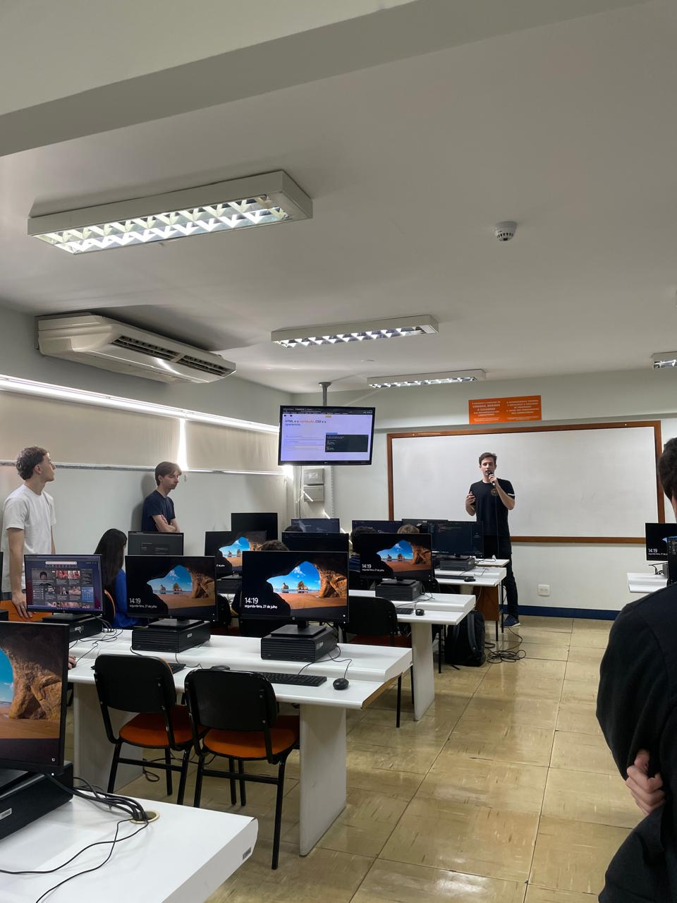

Relatório – 17ª Aula
Data: 27/07/2026
Turma: 8º e 9º ano
Instrutor:Fatobeni
Relatório – revisão html
Hoje foi a volta das aulas no projeto do Londrinese Tech depois de duas semanas de férias do projeto, com a saída do instrutor Kawan quem vai seguir com as aulas a partir de hoje será o Vitor Fatobeni. Na aula de hoje tivemos uma revisão geral dos conteúdos vistos dentro do html, desde as estruturas básicas até uma pagina simples com título, parágrafo, lista e imagem. após a revisão,foi pedido aos alunos que criassem uma página simples usando as tags que revisamos durante a aula. No final, por conta da revisão ter ocupado muito espaço, acabamos sem muito tempo para mais atividades, então fizemos um Kahoot do conteudo para finalizar a aula.
